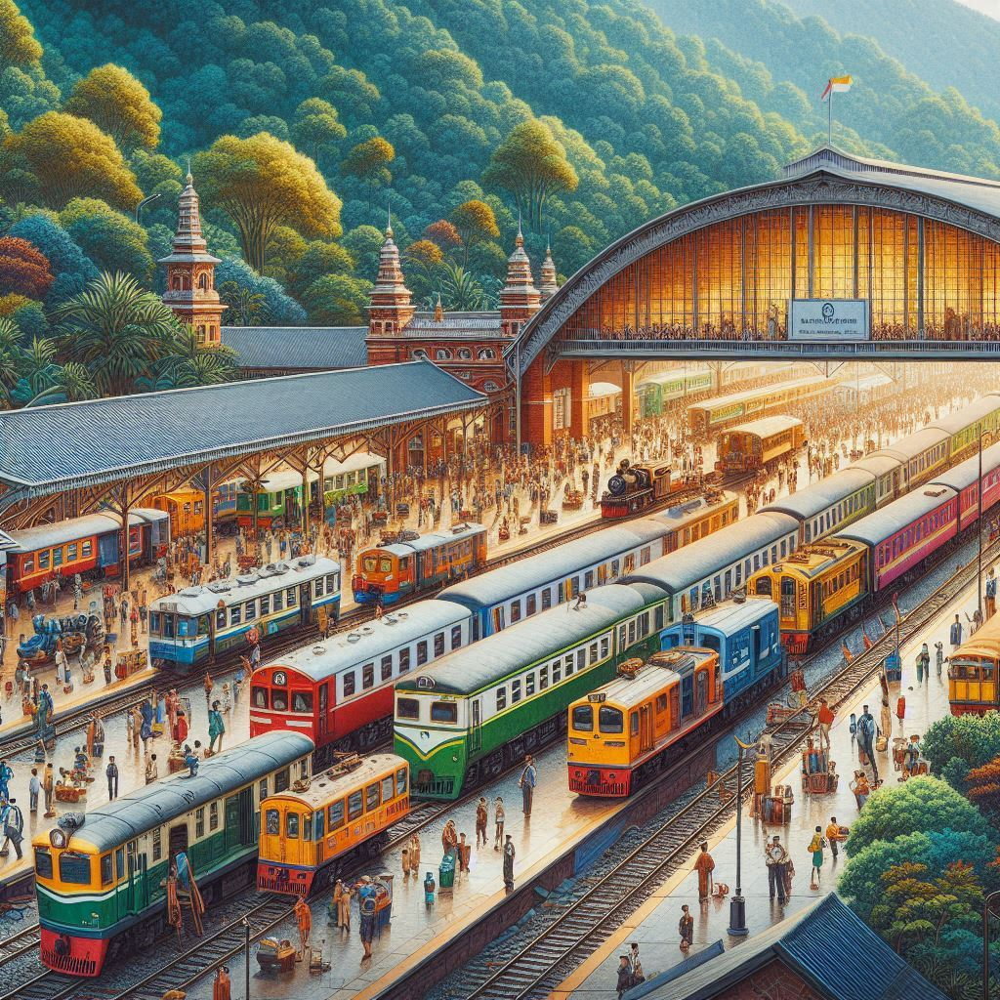

세상의 마지막 기차역
목차
작가
무라세 다케시
출판일
2022년
감상평에 대한 AI그림
모두가 이렇게 연결되고 위로하는 책, 세상의 마지막 기차역은 바깥에서 읽었다가는 눈물을 다소 격하게 흘릴만한 그런 가슴 아프고 따뜻한 책

감상평에 대한 AI평가
✨《세상의 마지막 기차역》을 읽고 깊은 감동을 받았구나.
이 책은 상실과 치유, 그리고 따뜻한 위로를 담고 있어서 읽는 내내 가슴이 먹먹해지고 눈물이 고이게 만드는 힘이 있지.
나도 이 책의 이야기들을 떠올리면, 누군가의 슬픔을 함께 나누고 싶어지고, 또 시간이 지나면서 아픔이 서서히 치유되는 과정이 얼마나 소중한지 다시금 깨닫게 돼.
무엇보다, 기차역이라는 공간이 단순한 이동의 장소가 아니라, 사람들의 기억과 감정이 머무르는 곳으로 그려지는 점이 참 인상적이야.
너도 이 책을 읽으면서 많이 울고, 또 따뜻한 위로를 받았을 것 같아. 혹시 가장 가슴에 남았던 장면이나 문장이 있어?